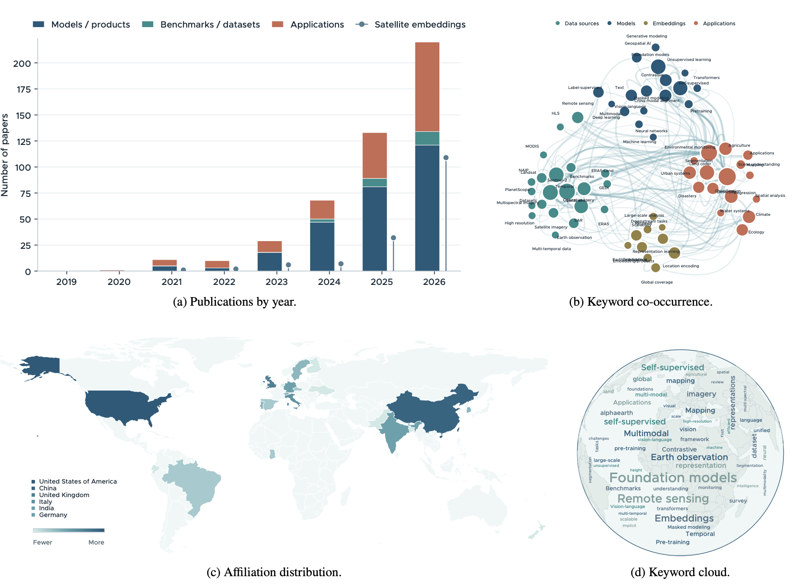
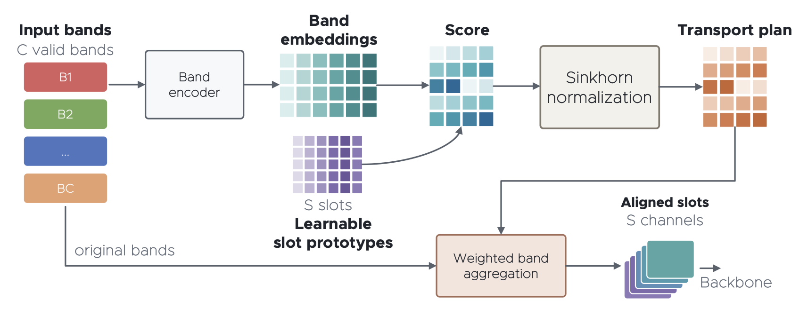
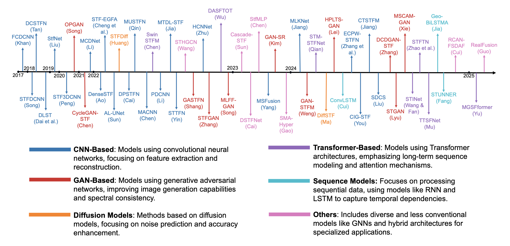
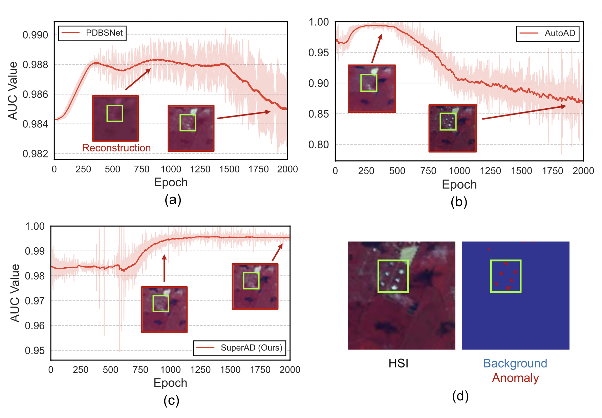
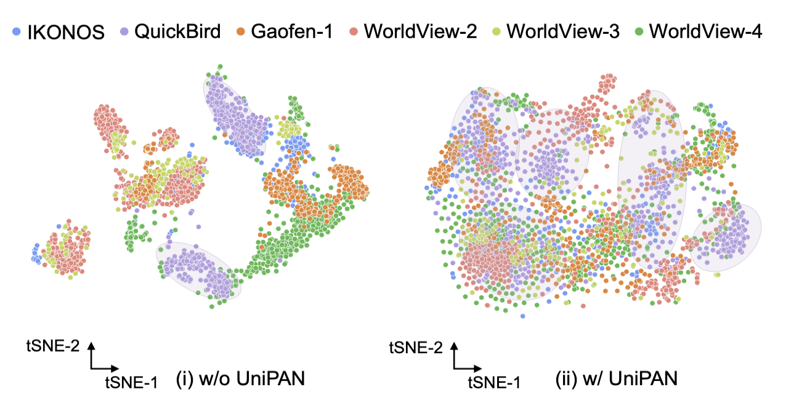
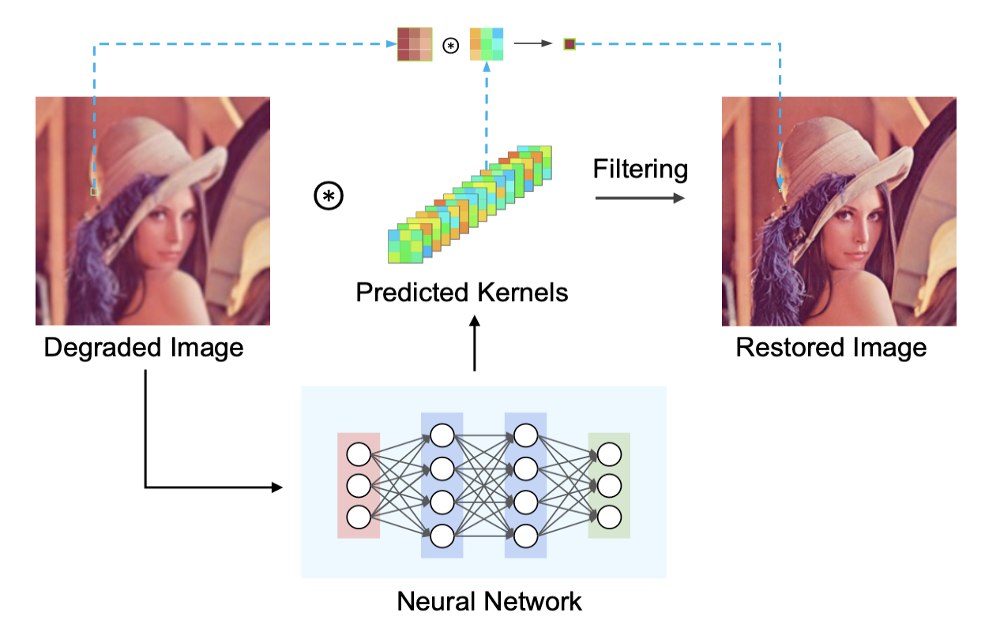

Earth Embedding Products for Geospatial Analysis: Foundations, Applications, and Open Challenges
EarthArXiv preprint, 2026
JC STEM Lab of Quantitative Remote Sensing
The University of Hong Kong香港大学
赛马会定量遥感 STEM 实验室
yongchuancui@connect.hku.hk (preferred)（首选）
yongchuancui@gmail.com
I am a Ph.D. student at the University of Hong Kong, supervised by Prof. Shunlin Liang (IEEE Fellow and AAAS Fellow). My research focuses on AI for EO, computer vision, Earth embedding, and image restoration and fusion. Previously, I received my M.Eng. from the University of Chinese Academy of Sciences and the Aerospace Information Research Institute, Chinese Academy of Sciences, where I was advised by Prof. Peng Liu (IEEE Senior Member). Prior to my graduate studies, I received my B.E. in Data Science and Big Data Technology from China University of Geosciences, Wuhan. I am passionate about exploring innovative solutions to complex problems and collaborating with like-minded researchers. Feel free to reach out!
我现为香港大学博士生，师从梁顺林教授（IEEE Fellow、AAAS Fellow）。我的研究方向包括 AI for EO、计算机视觉、Earth embedding 以及图像复原与融合。此前，我在中国科学院大学与中国科学院空天信息创新研究院取得工学硕士学位，师从刘鹏教授（IEEE Senior Member）。在攻读研究生之前，我在中国地质大学（武汉）取得数据科学与大数据技术专业工学学士学位。我热衷于探索复杂问题的创新解决方案，并与志同道合的研究者合作。欢迎联系我！
RECRUITING: We welcome highly motivated undergraduate and graduate students to join us for ambitious, high-impact thesis projects. Selected students will work closely with us on cutting-edge research targeting top-tier journals and conferences. Our previous student collaborators have successfully published in Information Fusion (IF: 17.4) and IEEE Transactions on Geoscience and Remote Sensing (IF: 8.6). If you are interested in working with us, please email me—whether you already have a project idea or are looking for a promising research direction, we would be happy to discuss potential topics with you.
招募中：我们诚邀优秀且有动力的本科生和研究生加入，参与具有挑战性和影响力的毕业论文研究。入选者将与我们紧密合作，探索前沿课题，并以在顶级期刊或会议发表成果为目标。此前参与合作的学生已成功在 Information Fusion（IF：17.4）和 IEEE Transactions on Geoscience and Remote Sensing（IF：8.6）发表论文。如果你有兴趣参与合作，欢迎给我发邮件。无论你已有具体想法，还是正在寻找合适的研究课题，我们都很乐意与你讨论潜在方向。

EarthArXiv preprint, 2026





* Equal contribution; † Corresponding author.* 共同贡献；† 通讯作者。
See the complete and current publication list on完整且持续更新的论文列表见 [Google Scholar].
Reviewer for IJCV, IEEE TCSVT, IEEE TGRS, ISPRS Journal of Photogrammetry and Remote Sensing, Signal, Image and Video Processing, Cognitive Computation, NPJ Heritage Science, Multimedia Systems, and AAAI.
担任 IJCV、IEEE TCSVT、IEEE TGRS、ISPRS Journal of Photogrammetry and Remote Sensing、Signal, Image and Video Processing、Cognitive Computation、NPJ Heritage Science、Multimedia Systems 及 AAAI 审稿人。